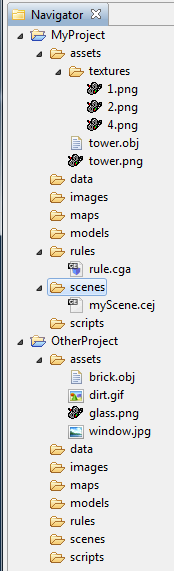

fileSearch / filesSearch functions
Syntax
string fileSearch(searchQuery)
string[] filesSearch(searchQuery)
Parameters
- searchQuery (string)
Search query to apply on all files in the workspace. See below for details.
Returns
An alphabetically sorted list with all files in the workspace matching the searchQuery.
fileSearch returns a string list - each entry is terminated with a ";" (semicolon).
filesSearch returns a string array.
Description
The fileSearch and filesSearch functions list all files in the workspace which match their absolute path with the searchQuery. Search queries are relative to the current project (i.e. the project in which the current rule file resides) except if the searchQuery is based on an absolute workspace path (i.e. starts with a slash ("/") or a wildcard (* or ?). Pseudocode of the matching algorithm:
result = ""
for all open projects in workspace :
if project == current project:
result += all matching files in project, relative to assets folder
result += all matching files in project, relative to project folder
fi
result += all matching files in project, relative to workspace root
sort result
end
Search Queries
The CityEngine features advanced search queries supporting wildcards, regular expressions and file properties such as filetype. All files in the workspace are filtered with the query and the absolute workspace path is returned. Whitespace means AND; queries with filepaths containing a space character need special treatment.
Wildcards
The common wildcards characters '*' (asterisk character) and '?' (question mark) are supported. The asterisk substitutes for any series of characters (including no characters), and the question mark substitutes any single character.
Regular Expressions
Regular expressions allow for complex string patterns descriptions. A comprehensive introduction to regular expressions is out of scope for this manual, please refer to other sources such as Wikipedia or the specification from the Open Group.
Regular expressions start with '$'. Always put the '$' as the FIRST character if your searchQuery is a regular expression! Note that with regular expressions, the semantics of the wildcards "*" and "?" changes. "*" matches the preceding element zero or more times, therefore use ".*" to emulate the "match anything" behaviour.
Whitespace Characters
Because whitespace means AND, searchqueries containing an actual space need to be put into single quotes.
For example
filesSearch("'facade pictures/greek style *.png'")
Alternatively, spaces can be escaped in regexps with "\s" or "\x20":
filesSearch("$facade\\spictures/greek\\sstyle\\s.*.png")
Note the double backslashes - this is needed because the CGA compiler also interpretes the '\' character on compilation.
File Properties
Following file properties can be querried:
- Name: Filename
- Ext: File extension
- Project: Project name
- Path: Filepath
Related
Examples
In the following examples, we use a basic workspace with two projects and a few files. The examples are in rule.cga, i.e. MyProject is the current project.

Wildcards
filesSearch("*.png") |
[/MyProject/assets/textures/1.png,
/MyProject/assets/textures/2.png,
/MyProject/assets/textures/4.png,
/MyProject/assets/tower.png,
/OtherProject/assets/glass.png] |
Because the searchQuery starts with an asterisk, all projects are included in the search.
There is no png file with a 1-character-name in the root directory or the asset directory of the current project.
filesSearch("*/?.png") |
[/MyProject/assets/textures/1.png;
/MyProject/assets/textures/2.png,
/MyProject/assets/textures/4.png] |
Because of the leading asterisk, all folders are searched for a png file with a 1-character-name.
filesSearch("textures/*") |
[/MyProject/assets/textures/1.png,
/MyProject/assets/textures/2.png,
/MyProject/assets/textures/4.png] |
All files in the "textures" subfolder of the asset folder in the current project match.
Regular Expression to select specific characters
filesSearch("$[12].png") |
[] |
There is no png file with name "1" or "2" in the root directory or the asset directory of the current project.
Regular Expression to select specific characters, part 2
filesSearch("$textures/[12].png") |
[/MyProject/assets/textures/1.png,
/MyProject/assets/textures/2.png] |
All png files with name "1" or "2" in the "textures" subfolder of the asset folder in the current project match.
Regular Expression + Wildcard
filesSearch("$.*/[12].png") |
[/MyProject/assets/textures/1.png,
/MyProject/assets/textures/2.png] |
All png files with name "1" or "2" match. Note the period before the asterisk!
Regular Expression to select a range of characters
filesSearch("$textures/[2-5].png") |
[/MyProject/assets/textures/2.png,
/MyProject/assets/textures/4.png] |
All png files with name "2", "3, "4" or "5" in the "textures" subfolder of the asset folder in the current project match.
Regular Expression + OR
filesSearch("$textures/[12].png|.*.obj") |
[/MyProject/assets/textures/1.png,
/MyProject/assets/textures/2.png,
/MyProject/assets/tower.obj,
/OtherProject/assets/brick.obj] |
All png files with name "1" or "2" in the "textures" subfolder of the asset folder in the current project and all obj files in the workspace match.
File Properties
filesSearch("Name=1.png") |
[/MyProject/assets/textures/1.png] |
Only one file matches the name excatly.
File Properties, AND
filesSearch("Project=OtherProject Ext=obj") |
[/OtherProject/assets/brick.obj] |
Using whitespace, two or more queries can be combined. Here, a file must match both the project name and the file extension.